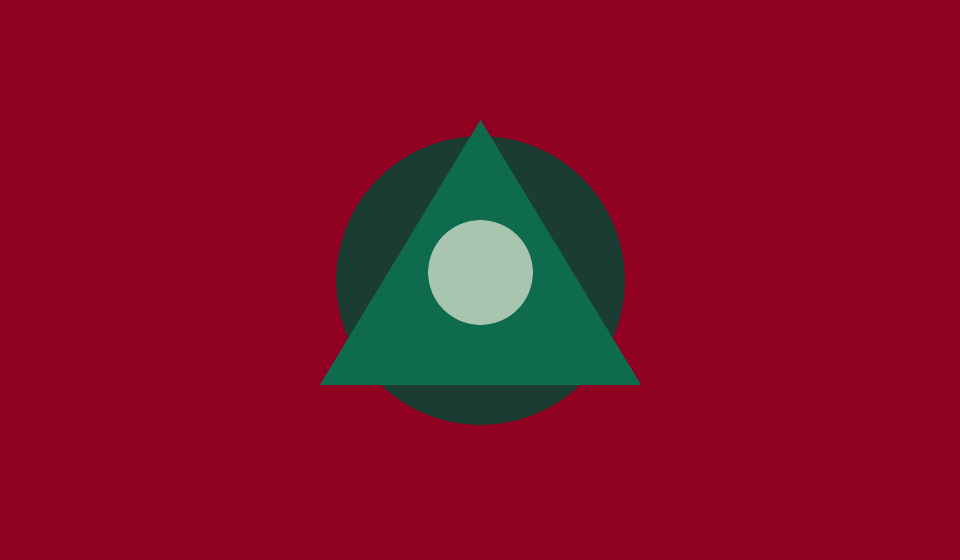

ƒD1ST
Watch the signal break.
ƒD1ST is DIST, a stereo distortion and saturation effect. Six lenses on a living path, 34 styles, Heat Spread Motion, Superb 32×, linear phase, 48 factory programs.
It is part of Stupid Audio, the family of free plugins.
Listen
Wet, Dry, Delta, and Caustic. Delta is the grit you added. Caustic is that grit with the body stripped. Keys: W, Shift+D, E, C.

Path
Six lenses, six routes: One, Stack, Split, Prism, Axis, Cavity. Click a node to Focus it. Motion wires onto the path. That graph is the product.
